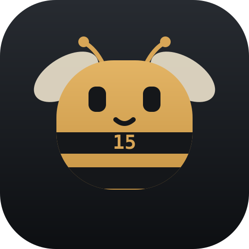

09:15
CAPTURE CELL
一句话，让这一刻有了落脚处
没有分类表单，也不用开启计时。输入刚刚发生的事，时间戳会替你完成剩下的工作。
TOKENDANCE 岛 · 01 号住户
TOKENDANCE ISLAND · RESIDENT 01
每十五分钟，一个轻轻的时间格。想起来就写一行，一天的形状会自己出现。
Every fifteen minutes is a tiny time cell. Write one line when it matters and the shape of your day appears.

蜜蜂的采集路线
THE BEE'S ROUTE
CAPTURE CELL
没有分类表单，也不用开启计时。输入刚刚发生的事，时间戳会替你完成剩下的工作。
记录工具箱
LOG TOOLKIT
下一个时间窗、间隔、今日数量与连续记录。
Next window, gap, count and streak.
从完整历史里找回某个项目或心情。
Recover a project or feeling from history.
24 小时活动火花线，让节奏一眼可见。
A 24-hour sparkline makes rhythm visible.
搜索、主题与导出，都能从键盘快速抵达。
Search, themes and export from the keyboard.
LOCAL FIRST
没有账号、服务器、广告或分析工具。文字和照片保存在你的设备上，随时可以导出，还可选择 AES-256 加密。
No accounts, servers, ads or analytics. Text and photos stay on your device; export anytime, with optional AES-256 encryption.
阅读完整隐私政策 →Read the privacy policy →